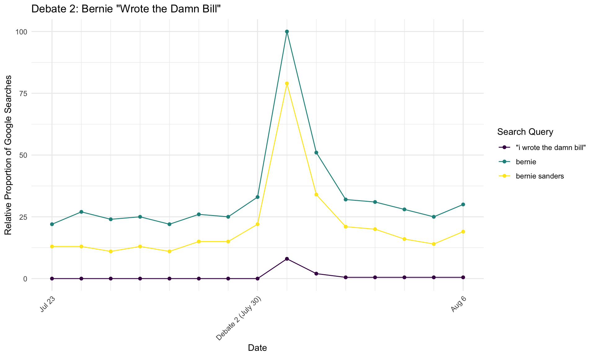
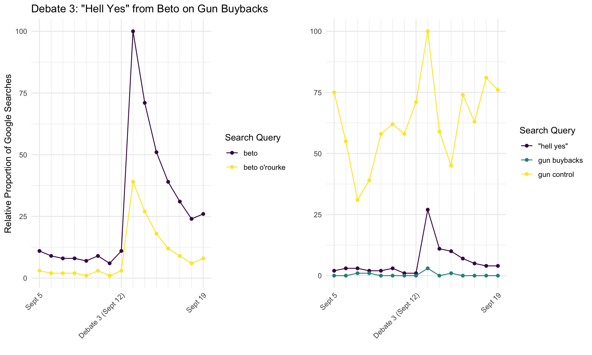
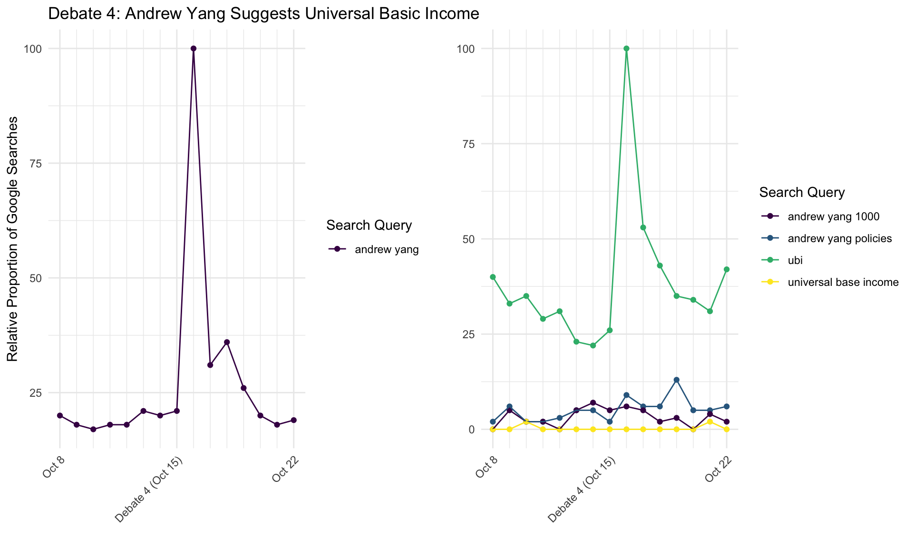
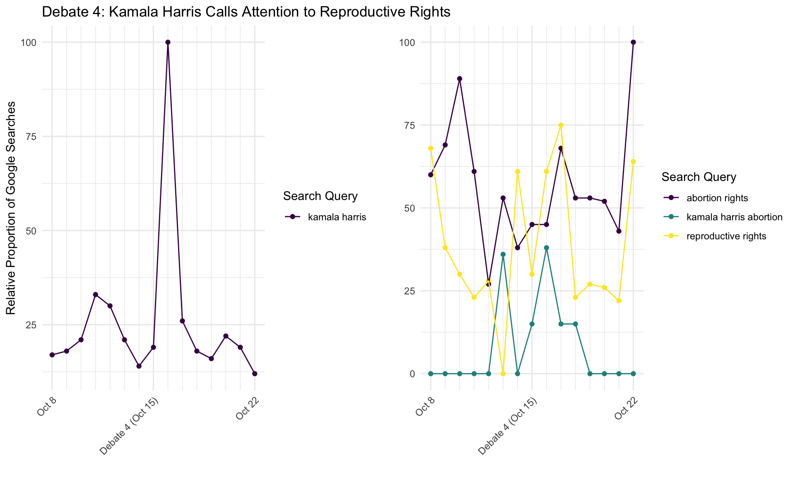
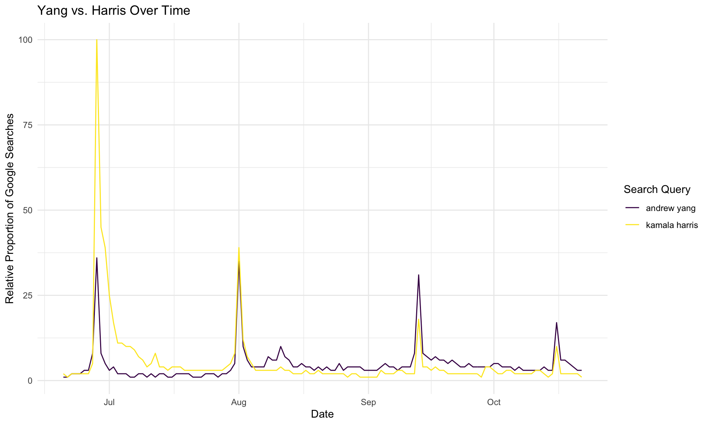

Debate Impact on Google Search Behavior
Introduction
Google search data is increasingly viewed as an important predictor of election outcomes. It is thought that the Americans who make searches online may be a more representative sample of the voting population than those reached by polling organizations, and that people may be more honest in the privacy of their own computer than in a poll response. Main events from each of the first four Democratic Debates were selected for investigation with Google Trends data, and search volume for relevant terms has been plotted for the week immediately preceding and immediately following each debate. These analyses are considered a secondary indicator of the impact that debate performance has on public perceptions of Democratic presidential candidates.
Arguably the most notable advocate of the use of Google Trends data in election applications is Seth Stephens-Davidowitz, former data scientist at Google and bestselling author of “Everybody Lies.” Stephens-Davidowitz has examined questions such as the role of racism in Barack Obama’s 2008 and 2012 election performance and how Google data can show voter reactions to rumors and advertising campaigns. Several of his ideas are incorporated into the following analyses, although his work has been almost entirely focused on predicting presidential elections and these analyses look exclusively at the current Democratic primaries.
It is important to note that it is impossible to know an individual’s motivation for making a particular search, so these analyses are exclusively exploratory. Additionally, Google Trends yeilds relative search proportions rather than absolute search counts. This means that all searches are scaled from 0 to 100, with 100 representing the day during the period of interest during which the search query made up the greatest proportion of all Google Searches. Comparisons between graphs should therefore be made with caution. Google Trends does allow the comparison of up to 5 search queries at once, where all results are shown on a shared scale. All graphs with multiple queries were generated in this manner. Included terms are therefore all relative to each other and comparisons can be made. Given this scaling system, some searches (such as those for candidate names) have search volume so great that they mask any trends in less frequently searched queries. When this occurred, these high-volume terms were considered on a separate scale in a second panel.
Debate 1: June 27, 2019
During the first debate, Kamala Harris called Joe Biden out for his previous cooperation with segregationalist Senators and his opposition to school busing programs. She made a tense moment personal by sharing her experience as a young girl brought to her California public school every day by a busing program. Biden defended himself by arguing that he only opposed busing that was mandated by the Department of Education.

There is a clear, sharp spike in relative search volume on June 28th, the day immediately following the debate. Search volume for Kamala Harris surpassed that for Joe Biden, perhaps because Kamala, a lesser-known candidate, was able to draw significant and negative attention to Biden, an extremely well-known candidate. Harris’s search advantage was sustained in the days following the debate. Search volume for “harris biden” is also higher than for “biden harris”, and it is reported by Seth Stephens-Davidowitz in his book “Everybody Lies” that voters tend to subconsciously place the name of the candidate they support first in searches including two candidate names. This change in search volume is therefore an indication that the busing comments increased support for Kamala Harris and hurt Joe Biden’s popularity among voters.
Debate 2: July 30, 2019
When Bernie Sanders enthusiastically advocated for Medicare for All and spoke to the extensive coverage that it would provide, Tim Ryan interjected to say that Bernie couldn’t know exactly what it would cover. Sanders shot back, emphatically stating that he did know because “I wrote the damn bill!” in one of the night’s most memorable moments.

Search interest in Bernie spiked immediately following the debate, although this increase was not sustained. Although Bernie’s comeback was witty and memorable, it was used in a less controversial situation than Harris’s comments toward Biden and may not have resonated with voters long-term. It can be seen, however, that people were searching the phrase “I wrote the damn bill” immediately following the debate, which shows that this moment certainly did get some attention from voters.
Debate 3: September 12, 2019
When asked if he would mandate gun buybacks, Beto O’Rourke answered with an enthusiastic “hell yes”. This line earned significant applause from the debate’s live audience, and O’Rourke backed up his strong stance on gun control with a passionate description of the devastating potential of semi-automatic rifles. Shortly after, he received praise from fellow candidates for his response to the recent shooting in El Paso, O’Rourke’s hometown.

Beto’s resounding support of gun control measures seems to have increased voter interest in him. Searches for his name remained elevated even after the initial spike immediately following the debate, and a small spike is also noted for “hell yes” searches. Interestingly, searches for gun control also increased following the debate, possibly indicating this issue’s importance to voters.
Debate 4: October 15, 2019
Yang and Universal Basic Income
Andrew Yang responded to Bernie Sanders’ federal jobs guarantee by proposing universal basic income as an alternative solution to job loss. He made a strong case for the proposal, emphasizing the idea’s simplicity and ability to provide Americans with money without forcing an undesirable job in federal government.

Searches for Andrew Yang and his Universal Basic Income proposal (indicated by “ubi” searches) sharply increased following the debate and remained somewhat elevated in the following days. Searches for “ubi” stayed relatively higher than searches for “andrew yang” in the days following the debate, suggesting that Yang may have increased interest in his proposal more than in himself.
Harris and Reproductive Rights
Kamala Harris expressed her frustration in the lack of conversation around reproductive rights and abortion in the previous debates by turning a conversation about financing Medicare for All to abortion. She spoke eloquently and dramatically about the need to ensure women’s access to these services.

Again, search interest in Kamala Harris rose sharply immediately after the debate, and an increase in searches that included both her name and “abortion” indicates that this interest may have been due in part to her impassioned comments on women’s reproductive rights. However, search volume for “kamala harris” fell much faster than it did for “andrew yang” following this debate, indicated that his debate performance may have caused a longer-felt impact on voters.
Yang vs. Harris
To further explore the differences seen in search behavior regarding Kamala Harris and Andrew Yang following the fourth debate, their relative search volume from June 20th, 2019 (a week prior to the first debate) until October 22nd, 2019 (a week following the fourth debate) was graphed.

Kamala Harris clearly put herself on the map during the first debate, likely with her comments regarding busing, and her search volume swamps that of Yang. However, their performance became more comparable after the second debate, and Yang has steadily received slightly higher search volume since that point. It is also interesting that search volume appears to be decreasingly impacted by each subsequent debate. This could be explained by lower viewership in the later debates, or possibly less voter interest in these candidates over time.